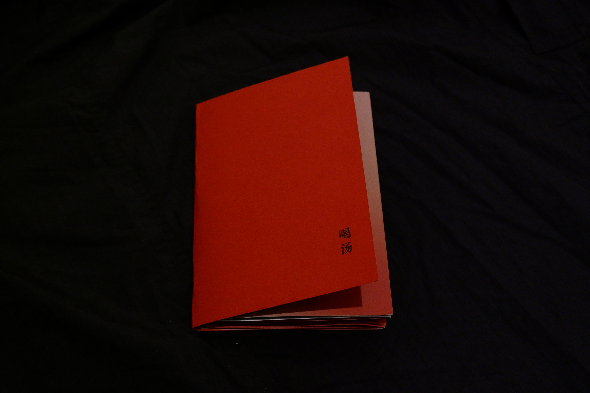
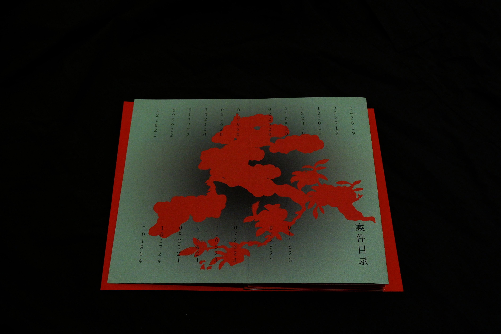
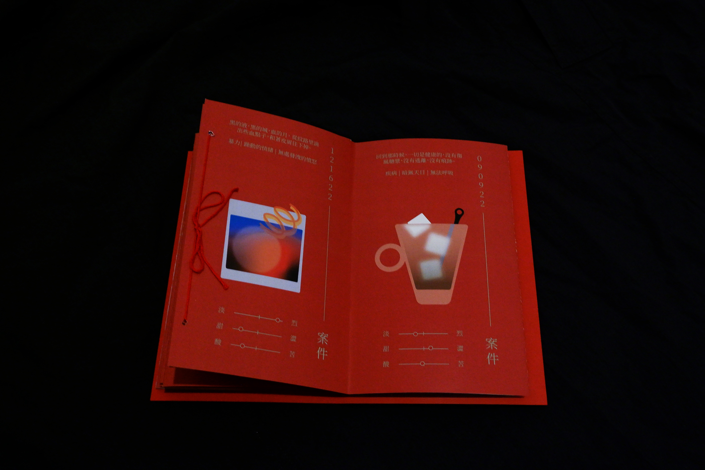
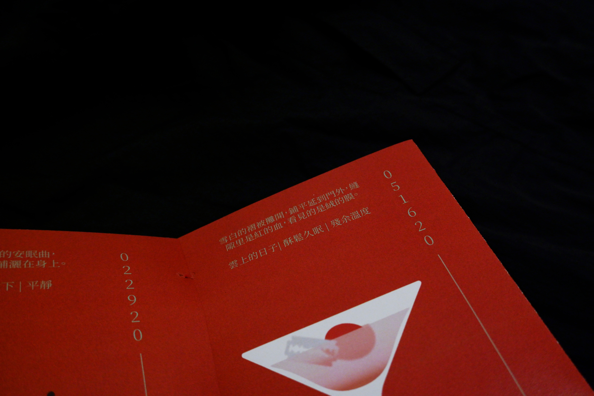
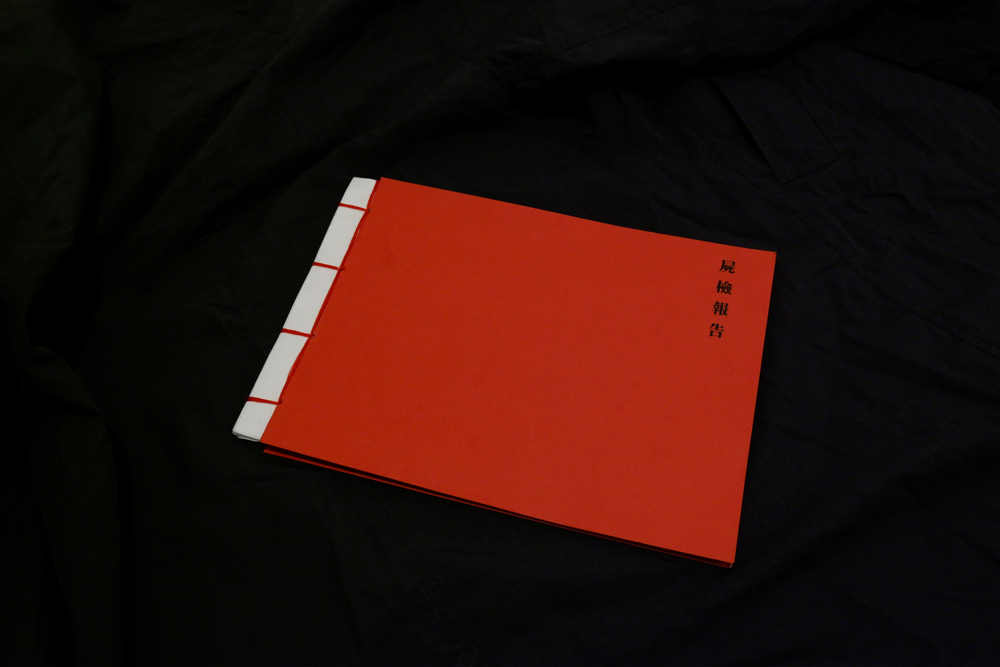
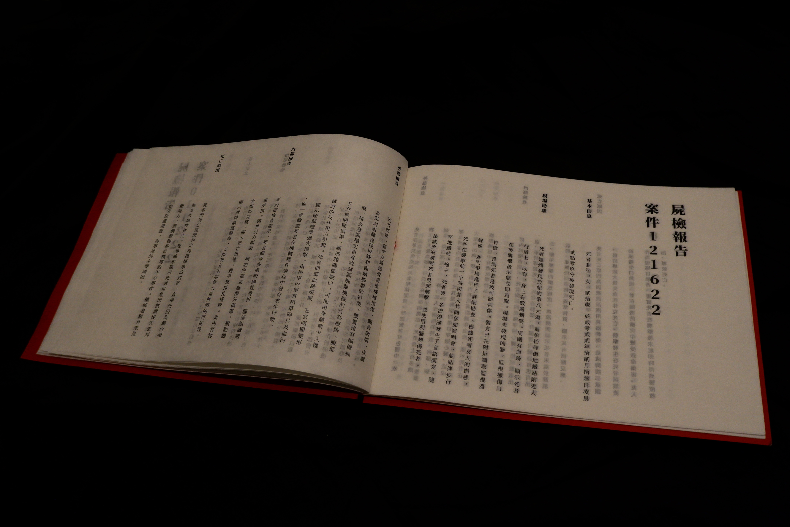

soup
5"x7" & 8.5"x11"
Printed Zine, 2024
"soup" is a two-part zine that treats death with a wink. Inspired from my habit of saying “I want to die” (too often), I imagined these ending as a new storyline.
Each drink on the bar menu represents one of those moments—imagining what if I actually did die. Paired with fictional autopsy reports of my many endings.
The mean of this project is a practice of taking death less seriously, seeing the endings more lightly—like taking a sip at a bar.
Each drink on the bar menu represents one of those moments—imagining what if I actually did die. Paired with fictional autopsy reports of my many endings.
The mean of this project is a practice of taking death less seriously, seeing the endings more lightly—like taking a sip at a bar.





